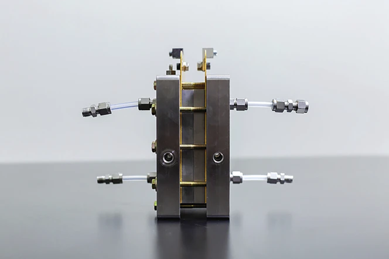

Hardware Automation Co-op
Twelve
I built software for CO₂ electrolysis research, including instrument control, hardware-in-the-loop tests, and automated recovery for lab test stands.

Test stand commissioning
I designed a hardware-in-the-loop test system for new stands so the team could exercise instrument behavior and catch wiring or software issues during the build. I also used linear regression to flag anomalies in acquired test data.
Software structure and recovery
I separated the GUI from the instrument-control backend to support a web interface. I also built automatic recovery to restore the software after a crash or reboot.

